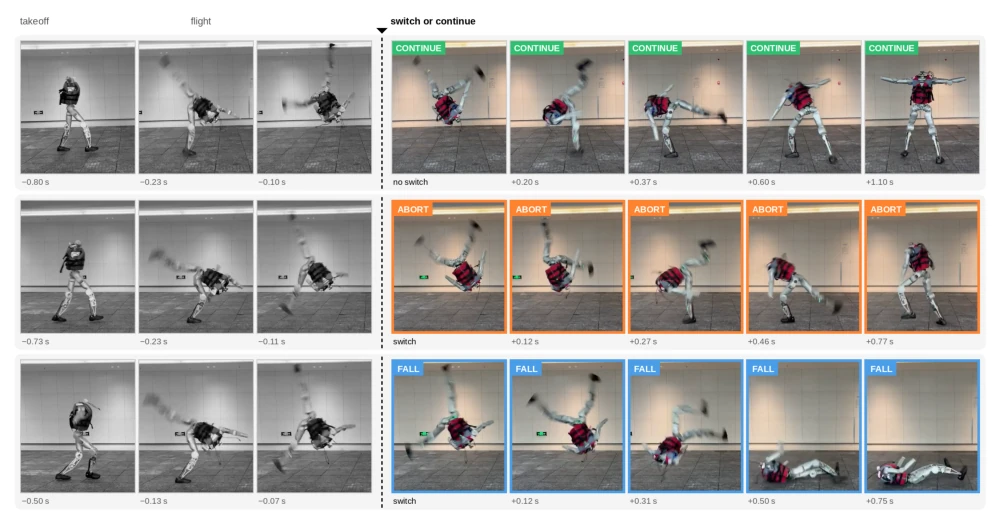
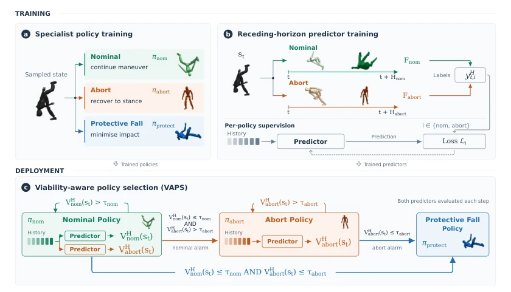
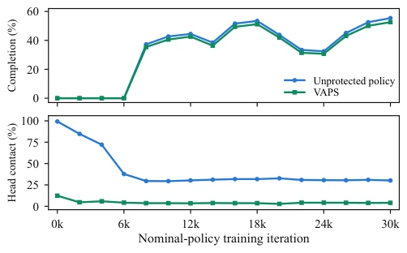
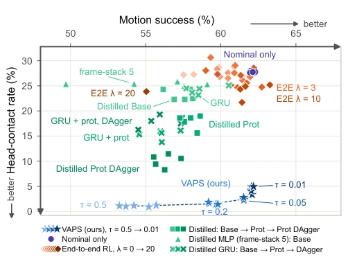

这篇论文给机器人做体操加了个“后悔药”机制。核心是别傻乎乎地硬撑，也别直接躺平，中间加个“紧急迫降”。VAPS 搞了个三级跳：继续、中止、保护性摔倒。最妙的是它不只看状态，还看策略能不能活过接下来几步。虽然堆了三个策略加两个预测器，显得有点臃肿，但在 Unitree G1 和 LimX Oli 上实测确实比单一大模型靠谱。不过，这需要大量模拟数据来训练预测器。对于追求极致动态性能的研究者来说，这算是一个务实的“防呆”设计。论文指出分层架构比端到端更难被蒸馏替代，这暗示了安全决策的复杂性可能无法被单网络完全压缩，为后续研究提供了新的架构思路。
This paper adds a 'regret mechanism' to robot gymnastics. The core is not to stubbornly persist, nor to give up directly, but to add an 'emergency landing' in between. VAPS implements a three-stage jump: continue, abort, protective fall. The most ingenious part is that it does not only look at the state, but also whether the strategy can survive the next few steps. Although it stacks three strategies plus two predictors, appearing somewhat bloated, it is indeed more reliable than a single large model when tested on Unitree G1 and LimX Oli. However, this requires a large amount of simulation data to train the predictors. For researchers pursuing extreme dynamic performance, this counts as a pragmatic 'fail-safe' design. The paper points out that hierarchical architecture is harder to be distilled and replaced than end-to-end, which implies that the complexity of safety decisions may not be fully compressed by a single network, providing new architectural ideas for subsequent research.
For humanoid robots performing high-dynamic actions like flips, crashing is the norm. Existing methods either stubbornly stick to reference trajectories [2], or trigger a single backup once deviation occurs [6]. The problem is that deviation from the reference does not necessarily mean a crash; sometimes it is possible to emergency brake and stop. Existing safety mechanisms often make intervention a binary choice, either continue or crash, ignoring the intermediate state of 'controlled abort'. Safety shields or constraint functions proposed in literature [3], [4], [5] usually calculate safety values only for a single strategy and cannot distinguish the severity between 'still salvageable' and 'only crash'. Although the predictor in literature [6] can predict falls, label rules limit its ability to provide early warnings. We need a framework that can dynamically adjust the degree of sacrifice based on strategy feasibility, rather than a simple switch, so as to maximize task success rate while protecting hardware.

Fig. 1: The same side flip on the LimX Oli humanoid with three possible endings. Under the nominal policy the robot completes the flip; when the maneuver is handed mid-flight to the abort policy it lands on its feet, and when it is handed to the protective-fall policy it performs a controlled fall protecting head and hands.
The VAPS framework proceeds in three steps. First, train three expert strategies: Nominal is responsible for executing actions, Abort is responsible for standing on both feet after losing control, and Protective Fall is responsible for protecting the head and hands when absolutely necessary. Second, train feasibility predictors targeting the Nominal and Abort strategies, predicting based on historical observations whether a physical fall (non-foot collision) will occur within the next H steps. The predictors use geometric decay distribution weighting, focusing more on recent risks rather than the final outcome. Finally, the decision layer evaluates the feasibility of the current strategy at each control step and selects the most ambitious yet feasible strategy. If Nominal is infeasible but Abort is feasible, switch to Abort; if Abort also fails, switch to Protective Fall. This hierarchy follows the 'minimum sacrifice' principle and is irreversible once switched. Predictor training utilizes contrastive simulation data to ensure generalization during real deployment. Additionally, this method not only protects mature strategies but also supervises untrained strategies; by retraining the Nominal predictor, it can adapt to new strategies, reflecting the flexibility of the architecture.

Fig. 2: Overview of VAPS. (a) Specialist policy training. (b) Receding-horizon predictor training. (c) VAPS: The least- sacrificial rule of policy selection.
Experiments were conducted on Unitree G1 and LimX Oli, with tasks including front flips and side flips. Baselines include single strategy, single backup switching, end-to-end RL, and distilled student networks. Metrics focus on success rate, head/hand contact rate, fall rate, and impact force. Results show that VAPS performs best on the Pareto frontier, significantly reducing head contact (down to 1.6% on G1) while maintaining a high success rate. Compared to end-to-end RL, VAPS achieves a better balance between safety and performance. Although distilled student networks can learn protection, they lack a trigger mechanism and cannot match the flexibility of VAPS. In hardware verification, the predictor had no false alarms in real side flips and successfully guided strategy switching. Ablation experiments indicate that the full hierarchical structure is more effective than single backup or single-step switching. Additionally, VAPS can also supervise untrained strategies; by retraining the predictor, it can adapt to new strategies, reflecting the flexibility of the architecture.

Fig. 5: VAPS applied to 16 checkpoints of an independently trained nominal policy.
其他图片Other Figures

Fig. 4: Head-contact rate against motion success on the Unitree G1 results of Table III; down and right is better.